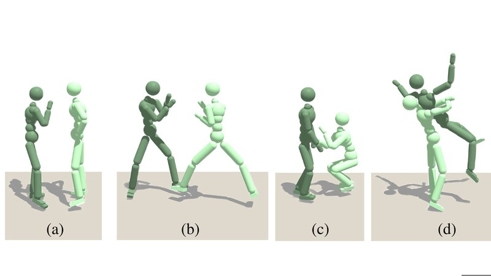

In progress · 2026Physics-Informed Motion Generation
Developing physics-informed motion generation for human interactions, with plausibility metrics to evaluate generative models. Simulations built with the Newton physics engine (NVIDIA Warp).